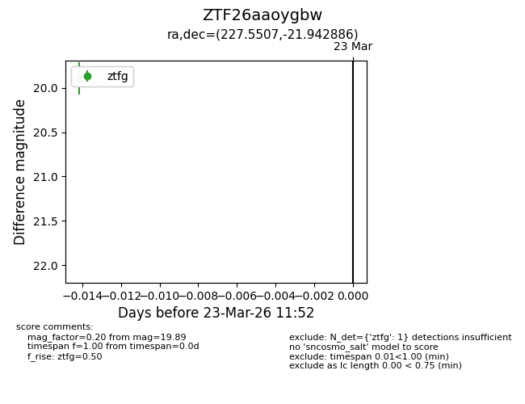
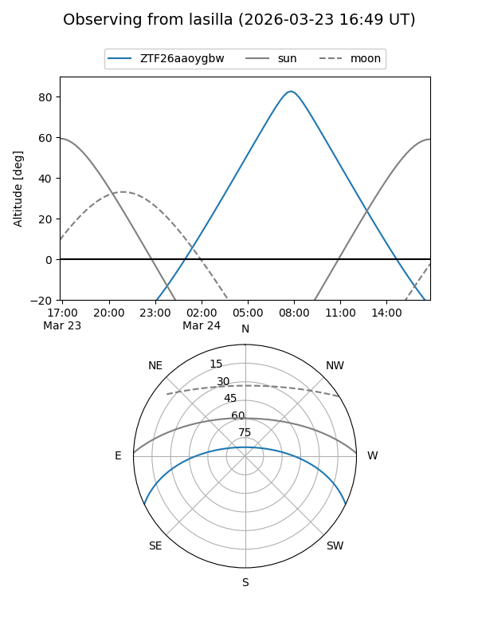
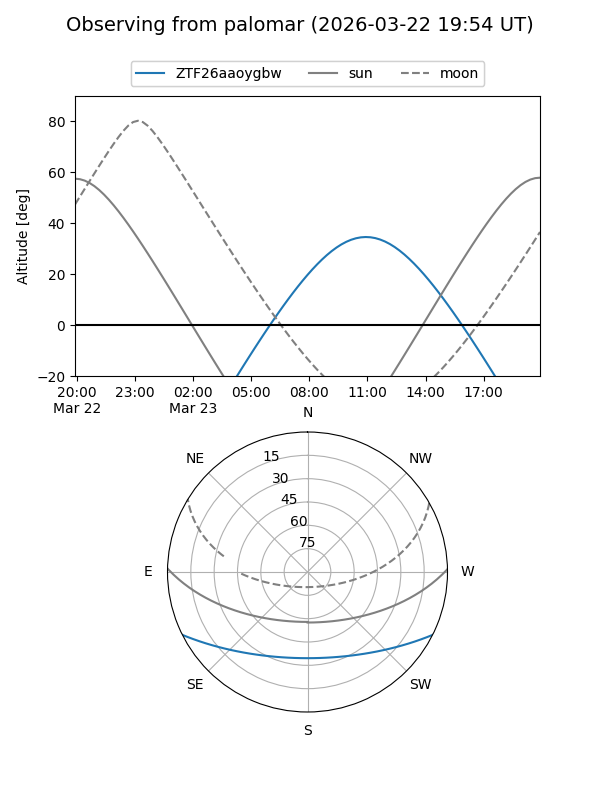
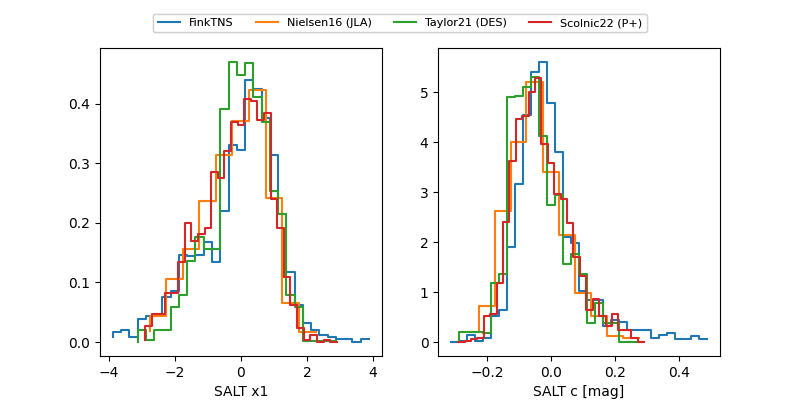

ZTF26aaoygbw
Target ZTF26aaoygbw at 2026-03-23 11:54
Aliases and brokers:
FINK: link
Lasair: link
ALeRCE: link
alt names
ZTF26aaoygbw (ztf,fink_ztf)
Coordinates:
equatorial (ra, dec) = 227.5507,-21.94289
equatorial (HMS+DMS) = 15:10:12.17,-21:56:34.39
galactic (l, b) = (340.7424,+30.55536)
Flags:
Photometry:
last ztfg=19.89
1 ztfg detections
Lightcurve

Visibility


Additional plots
